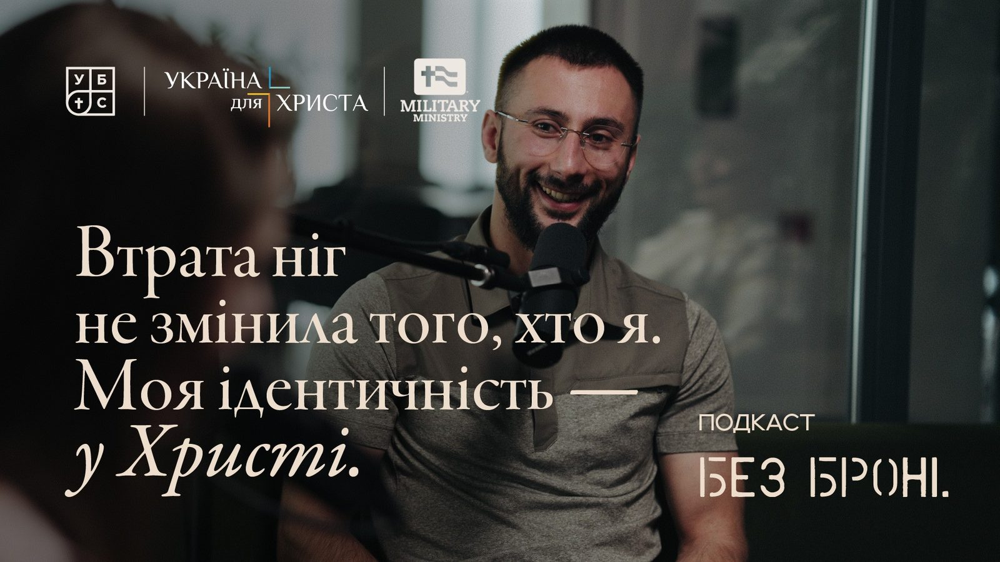

Season 1 Episode 3 ·
Viktor Haiduchok: “Will I really have to help my own daughter the same way?”

Viktor Haiduchok is the pastor of Transfiguration Church in Lviv, deputy senior presbyter of the Lviv region, and a reserve officer. His church serves soldiers and the widows of the fallen, and his son-in-law Bohdan was killed in the war. A conversation about militarism and pacifism in the Baptist tradition, fear and calling, ministry to families of the fallen at the Field of Mars, and how to be with a person in pain when no right words exist.
The conversation is in Ukrainian. Below is the full English text.
Introduction
Nadia: Welcome! You're listening to the podcast “Without Armor.” This is a space where we try to speak openly but without cynicism, to look for hope without falseness, and to talk about people, faith and war — without armor. And we're glad to welcome our guest Viktor Haiduchok. Viktor, you're the pastor of Transfiguration Church in Lviv and deputy senior presbyter of the Lviv region. Your church serves soldiers and the widows of the fallen, but the topic of war is also deeply personal for you: your son-in-law Bohdan Rilnyk was killed in the war. Thank you for coming to talk openly with us about how the war affects us, our churches and people.
Viktor: Thank you. I'm glad to be with you today.
A militarist in a Baptist church
Oleksandr: In the Baptist tradition in Ukraine, pacifism was for a long time — and in places still is — an almost unspoken norm. You're a pastor and at the same time a reserve officer. How were your convictions formed?
Viktor: I've said before that my views are more militarist. Even when I came to faith in the Lord, I was studying at a military department and took the oath of loyalty to the people of Ukraine. But before that I took an oath of loyalty to the Lord — that's probably more serious.
My convictions became firm once the war began, and especially when our son-in-law was killed. I started researching it more. A certain influence came from brother Vasyl Povorozniuk, who's responsible for chaplaincy ministry in our union. After my son-in-law's death we met, talked, and that's how our ministry to families began.
Nadia: And what does “I'm a militarist” mean? What does it mean for you?
Viktor: For me it means I'm ready to defend. And you have to defend with weapons.
Oleksandr: In a personal conversation you said you wanted to go serve. Were you thinking of going as a soldier or as a chaplain?
Viktor: Back then, at the beginning, probably more as a soldier. I'll put it this way: after my son-in-law's death there was a strong urge to go. But when I prayed a bit about why I wanted to go, I realized that what was driving me wasn't so much the desire to defend as the desire for revenge. And I understood: the desire for revenge is wrong. The desire to defend is right.
Nadia: Can I dig back into the beginning? You came to faith, took the oath. Was it simply that there was no war before and no reason for disagreement? Because in the Baptist tradition, as Sasha said, there's this — maybe not doctrinal, but still an inclination: we don't take up arms. The Soviet Union influenced that too. How was it for you with such convictions — being a reserve officer and at the same time a minister in a Baptist church, a deputy bishop? Or did the topic just not come up because we lived in a peaceful reality?
Viktor: You see, circumstances don't so much shape our heart as reveal it. At that time there was no war, everything was calm — so the questions didn't arise. The first questions started coming up in 2014. There was a congress of the Union then, and the first positions of the Union of Ukrainian Baptists were worked out: that we have two views — militarist and pacifist — and it's a free choice of a person's conscience.
But there's a call the apostle Paul talks about a lot: that a person should act according to conscience, and that we shouldn't condemn, belittle or despise one another. Because this topic can really spiral. Some will say: “You're such scoundrels, taking up arms.” And others: “And you're such cowards.” You can go very far with this. So the problem is not so much militarism or pacifism as how people treat each other. Belittling and condemning is what becomes sin.
Oleksandr: How do you manage to balance between militarism and pacifism and not fall into either extreme? Because it seems very typical for us to jump from side to side.
Viktor: Extremes are always typical for us humans: if not one, then the other. I think what helps me hold balanced positions is the Word and the Holy Spirit — so that I have the heart of Christ. We're called to imitate Christ. And our church's name isn't accidental — “Transfiguration”: transformation into the image of Christ. So here it's important to support a person, as they say, so they're truly firm in their convictions, and not to condemn another. So that I, holding a militarist position, don't condemn a pacifist.
But there's a nuance: that people don't hide their fear behind pacifism. Of course, we all have some fear. As one soldier said, only a fool isn't afraid. But what matters is who we go to when fear comes. Where we look for peace for our soul.
Pacifism or fear?
Nadia: I wanted to ask: you say that behind pacifism there may actually be fear. In your pastoral work, have you met brothers and tried to separate where it's fear and where it's pacifism? Is it something theoretical, or have you seen it in life and talked with those people: “Is this really conscience?”
Viktor: Of all the brothers in the church, I probably know one who firmly holds pacifist views. Watching his life and talking with him, I see that it really looks that way. Although there are thoughts that maybe he's more afraid. But it looks that way.
And there were people who said they were pacifists, but when something touched them personally — they were immediately ready to fight. Where they have strength and understand they can use it. Then it's not pacifism. Pacifism is pacifism in everything.
Nadia: And how does that discussion go? If you understand that it's just fear — how do you talk with the person?
Viktor: Sometimes, when a person has something valuable to them, I ask: “Let me take it from you. If you're a pacifist — please, take it and hand it over. And if not — why should you take it back from me?” That already shows the person is ready to fight for what's theirs.
Being where God wants you
Nadia: And a frank question: do you feel you're useful in the place where you are now?
Viktor: You see, I've always prayed to be where the Lord wants me — to be at the epicenter of God's events. Whether before or now — I haven't changed my view. I understand that my life, my fate, is in God's hands. Running off to the front away from God's will for me to be here is wrong. And it's equally wrong to stay here, running away from possibly being at the front. Be where the Lord wants you — there you'll be useful. That's the most important thing.
How the church has changed in four years
Oleksandr: I'd like you to look back a bit at these almost four years of war. Have you changed during this time?
Viktor: We've changed a lot. At the beginning of the war, thank God, not that many people left. Key people, all the pastors stayed in place. Later we heard a lot from church members: “Thank God, thank you for staying.” And that pushed the church into ministry.
First to refugees, then to soldiers. Every month our church van regularly goes east — to our soldiers who are serving, and in general to those we have contacts with in different brigades. We bring support for them, for local churches in the frontline zone, for the people who live there. A new ministry to soldiers appeared, a new ministry to families of fallen warriors, a new ministry to refugees. Then circumstances changed, there were fewer refugees, and we refocused on soldiers, the frontline areas and families of the fallen. Later a ministry also appeared for wounded soldiers in hospitals and rehabilitation centers.
And new people. God raised up new people who weren't visible before: they were passive, sat in the back pew. And here God raised them up. So the church changed a lot in terms of ministry in the context of war.
Nadia: You said you help frontline churches. It's great when churches unite rather than withdraw and protect only their own building. How exactly do you help other churches?
Viktor: The forms always differ. In the de-occupied territories our youth teams have held camps for children probably three times already. They restored a library there — incidentally, they bought a lot of Ukrainian-language books and took them there. And last week our brothers went to restore a house for chaplains and volunteers who serve at the church out there, far away, and for soldiers coming back from missions to rest a bit.
Bohdan
Oleksandr: Your son-in-law, Bohdan Rilnyk, was killed at the front. We won't avoid this topic. Could you tell us about Bohdan — what he was like — and how your family, your daughter Marta and all of you are going through this period?
Viktor: This is probably a topic I can react to very differently. What was Bohdan like? I'll say this: he had two right hands. He always took on the work, was always active in church. His brother-in-arms, who was wounded together with him — Bohdan received a fatal wound, and the other was wounded in the arm — says: “I understand I survived because the first shot was at Bohdan.” And he also says: “He always wanted to get everything done.”
In fact, he was killed after he repaired a machine gun. The machine gun was broken, and it wasn't his job — he had a different task. But in his free time he helped his brothers-in-arms. He loved children very much. They have two daughters — our granddaughters.
With God's help we're getting through. At first it was harder; now it's easier. They say: time heals. And from my own experience I understand: time doesn't heal. But healing wounds of the soul, like healing the body, takes time. And the right treatment. That's why the Lord is the physician who heals and sustains.
Oleksandr: It's good that you explained the saying “time heals,” because usually it sounds like an excuse. I wonder whether this loss influenced the fact that you're now with people who are going through the same thing you did?
And from my own experience I understand: time doesn't heal. But healing wounds of the soul, like healing the body, takes time.
“Will I really have to help my own daughter?”
Viktor: Of course it did. But actually I personally started going to the Field of Mars even earlier — probably from autumn 2022 — and supporting these families there in some way. And once, when I was coming back from there — Bohdan was already serving then — I'll say this probably for the first time here, although I've told close friends — a thought pierced me: “Will I really have to help my own daughter the same way?”
So it wasn't something new. And after Bohdan's death a new stage of development began. The ministry became not just my personal one — it became the ministry of our family and the church. And it developed into the form it has now: retreats, various events.
As one of the wives of fallen warriors said: “If your son-in-law and my husband hadn't been killed, we probably wouldn't be sitting here now reflecting on the Word of God.” Was there another way — I don't know. But God knows better.
Nadia: I'm trying to imagine: how did you get the idea to simply go to the cemetery? How did you start talking with people? How did you have the courage — a woman is tidying a grave, planting flowers — to go up to her and start talking? Because people don't know how. Whether it's an injury, the experience of war, or the loss of loved ones — people don't know what to say when they encounter pain. They'd like to, but they don't know how. How did your ministry begin? What did you say to these women, mothers, fathers? What do you approach them with?
Viktor: As far as I remember, the best thing was simply to offer: “May I pray for you?” I thanked them and prayed. At the beginning we had another brother who helped with financial resources. Depending on who was left in the family — a wife, how many children — we gave some financial help so they'd have something to live on. Not everyone accepted, of course. Some said: “Give it to someone else, someone has greater needs.”
So first — prayer, and then word by word: “Tell me about your hero, what he was like.” We got acquainted later, contacts appeared, we invited them to events.
Nadia: And what does going there mean for you? Is it always about meeting people, or also for yourself — to reflect on something?
Viktor: Both meeting people and reflecting myself. And when I'm at Bohdan's grave — to thank God for him once again. You know, gratitude heals the heart most of all.
You know, gratitude heals the heart most of all.
A dialogue with God about loss
Oleksandr: It's very interesting how you went through this — or are going through it — with God. Because, as I've seen from experience, people can become disillusioned with Him, take offense, get angry. How was and is your dialogue with God about loss built?
Viktor: When Bohdan was killed, in my daily Bible reading I was reading the Old Testament. And I put it aside — I didn't stop reading Scripture, but I switched to the Psalms. Because that's the book through which God works most on our hearts, on our emotions.
And from the moment Bohdan was killed until we buried him, I constantly had the Gospel of John open — the story of the raising of Lazarus. And every day I read and prayed. I asked God questions. And once during prayer — I didn't hear some audible voice, but I understand that God answered — He says: “Why are you asking questions? I'll ask you: why should others die, but not your son-in-law? This is war.” And I found no answer to why others should die but not one of my own. I understand that this is war.
The second thing. In the first days a friend called me, one of the pastors — their family had also gone through the loss of a child. And he says: “You'll constantly be attacked by 'what if' questions. Drive them away, because they'll simply torment and crush you.” I gathered our whole family, and we talked about it.
Later I also reflected: when we say “what if,” we always have a positive outcome in mind. “If he hadn't gone — he wouldn't have died.” “If I hadn't eaten it — nothing would hurt.” “If I hadn't gone…” Always positive. When I get food poisoning, I immediately think: “I'll never eat that again.” But everything could have been completely different. That's exactly what actually torments people and doesn't give a real, true answer. It's only our assumptions. And we always assume a positive ending, but it could have been negative too — only God knows which.
So this gave me peace and calm. It means God was to take him exactly this way. I understand that Bohdan, like others who have already gone into eternity, fulfilled their mission. Their mission was probably to defend our people, you and us, at the cost of their own lives. That gave and gives strength. Then — faith, hope and trust in God, that God never makes mistakes. Accepting this and healing your heart.
How to accompany families who have lost someone
Oleksandr: From your personal and pastoral experience of accompanying families who have lost husbands and sons: what are their points of tension, their points of pain? How should and shouldn't they be accompanied?
Viktor: First of all — incomprehension: why did this happen to them in particular? What for? Very often it's perceived as punishment, as injustice. Many people who believed in God become disillusioned with Him. And some, on the contrary, come to God. It's very different.
From experience I know: when people came to a retreat for restoration — that's what we called it, a retreat for restoring spirit, soul and body, because we work on three levels — some were very broken and bitter toward God. But in the process of talking, reading, praying they found many answers for themselves. Not to all questions — we'll never have answers to all of them. But the ones that are needed, God gave and gives in different ways.
We can't fully understand people who have lost someone. Even when you've been through the same loss yourself — you still won't fully understand. Because each family, each husband and wife, father and son had their own relationship, their own values, their own theological ideas. A whole set of factors that affect how all this is perceived, realized and accepted. So it's not so much about understanding the person as about being ready to truly support and help.
Talking with Martians
Viktor: I don't know — have you ever had a gallstone? Sorry.
Nadia: No, thank God.
Viktor: And you, Sasha, have you had a stone move?
Oleksandr: Fortunately just sand, not that deadly. But I thought the end was coming.
Viktor: Well, there you go — we don't have to explain it to each other, right? But for you it's incomprehensible. And we can't even explain to you what it's like. There are no words. As Paul Tripp writes in the book “Suffering,” it's as if people met Martians — different languages. You don't know how to ask. And the one who's hurting is ready to explain their pain, but has no words.
It's the same here as with illness: if you've been through the same thing — a tooth or something else — you understand without words how it hurts. That's why support, prayer and a readiness to truly help are important. And for the person who has lost someone, it's important not to shut down, but to say what they need at that moment. Because sometimes people are ready to help but don't know how. And they may do things that are good in their view, say words that are good in ordinary situations — but in situations like this they bring even more pain.
What words to say?
Oleksandr: How can someone who doesn't have similar experience but wants to help people with trauma do so? I'm often asked how to talk with veterans: what are the magic words, how to choose them correctly. And every time I'm stumped, because there are no right words. So now I'll ask you this question: what words should we say?
Viktor: You see, you can't compile a list of words or phrases you should say. Because every person is an individual and bears loss or pain differently. But the Bible gives an answer. The best thing Job's friends did when they came to him — and he had lost all his property, his children, and barely survived a severe, deadly illness himself — is that for seven days they simply kept silent and wept with him. That's when they were friends.
So first of all you need to become a friend — a silent friend — to the one who's bearing pain. To weep together. But it has to be sincere weeping. If it doesn't hurt you, there's no need to shed crocodile tears, like the hired mourners of old. But if you truly have love and compassion for this person, you want to support them — just be with them, cry with them. Ask if you can pray with them. Pray for them. If you're truly ready to do something, ask: “How can I be useful to you?” But only if you're really ready. Because sometimes people ask, but they're not ready to help.
Nadia: And this “how are you?”…
Viktor: Well, those are our standard phrases. In a situation like this a person won't say how they are. It's different languages — they won't explain it. They don't even have the words to explain it to you. I'll come back to illness again: if I'm having an attack, it's enough to say “I'm having an attack.” If you've been through it — you'll understand everything. And if not, they won't even find the words.
Nadia: Usually people ask: “Does it hurt? A lot?”
Viktor: Yes. But there are two sides here. For a person who hasn't been through it, it's easier to choose words, to think about how to behave properly. But the person who's experiencing pain — sometimes unspeakable — doesn't react the way they would in a normal situation. And there's no need to blame them for being that way. Because their whole nervous system is simply out of balance.
Being there
Nadia: What should a pastor be like in order to support soldiers or veterans? Does he need specific knowledge, specific experience?
Viktor: First of all I'll say that more of my time still goes to ministry to families who have lost someone than to soldiers. Although I do go to soldiers too, and we come to the rehabilitation center here. But less, because there are brothers for whom it's more of a specialization. People tell me: “You can't be everywhere, because you're not Christ.” And even Christ wasn't everywhere — but the Holy Spirit is. And the Holy Spirit uses different brothers. Thank God that different people can serve.
Education is definitely needed, some basic knowledge. But first of all you need a heart. A heart that loves, that's able to empathize and support. They say: you don't have to be a drug addict to minister to drug addicts. Same here: you don't have to serve there or experience loss in order to minister. The main thing is to have a sincere, loving heart.
Of course, since Sasha served, it's easier for him to talk with soldiers than for me. And it's easier for me to talk with families who have lost someone than for him. But there's still something: it'll be easier for him to talk with families of the fallen than for someone who never served at all. And vice versa: it's easier for me to talk with soldiers because my son-in-law was killed, than for a person who's had no contact with the military. We humans more easily accept those who have been through something, and we ourselves try to understand them. But going through it isn't a required condition for ministry. What's needed is a heart that loves God and people, able to support, to sincerely sympathize and to truly help.
Oleksandr: I agree with what you said about being loving, sensitive, someone ready to be there. I'm more than convinced that a person doesn't have to lose someone or go serve in order to begin to understand. Just be there. Because now everyone's busy with their routine — you have to book an appointment with the pastor for him to spend time with you.
For me an example is my father. He's not very empathetic, and in childhood we hardly talked. But during my service he was the one who was there. He was ready to listen. When I was wounded, it felt as if he'd taken some course: he asked if it was okay for him to call me regularly and check on how I was. For me that was a sign that he doesn't understand me, but is ready to show love and be there. It seems to me everyone tries to do something bigger, but they don't even do this simple minimum — being there.
Viktor: You know, very often in ministry — whether to families or to soldiers — we tend to do a one-off event: did it, and that's it. But building relationships, being there — that takes dedication, more time, inner energy, inner strength. And we're not always ready for that, because routine, work and other things really do distract us. That's how it is.
Tension between those who went and those who stayed
Nadia: Is there tension in the church between those who went to serve and those who didn't? And what's important to lay down now so that this barrier doesn't grow later?
Viktor: I'll speak about our church. About ten people from our church are serving: one sister volunteered, and the brothers are in different units. There's probably no tension. But saying there's none at all would be untrue. There's a little. And most likely it's because of certain expectations. It's one thing when I'm here, another when I'm there: there I immediately have more expectations. Or rather, before, there were only others' expectations of me, and I didn't always meet them. So one way or another there'll always be a bit of tension. And that's normal, because we're human: we expect some reaction, some support, but it's not always what we expect.
By the way, our brothers who are serving wrote a message in the church chat — already from a soldier's position — about what they as soldiers expect from the church. I think, in principle, most soldiers expect this. So we did certain things in the church. For example, every soldier who was in a home group was assigned to that group: so they'd pray for him, so someone from the group would call him. So that it wouldn't be the pastor's ministry, but the church's ministry to soldiers. That's how we divided it.
Support for families: we support every family, including financially. Every month we hold meetings for wives of soldiers who are serving — the sisters take care of this. Sometimes they invite pastors to share a word of encouragement, comfort, consolation.
So if there's dialogue between those who serve and those in the church, it reduces tension, understanding appears. But I can't say that everyone supports it one hundred percent. We talked at the beginning: there are pacifists, there are militarists, but no one talks about it loudly. If someone has a different view, they quietly hold their position. So there's no tension as such. There's a little — and that's normal.
How not to make idols of soldiers
Oleksandr: Now we can talk about heroization. Tell us as a deputy bishop: is there a risk of excessive heroization of soldiers? And how do we keep pain and trauma from becoming the only voice in the church? Again it turns out every question is about how to balance.
Viktor: Well, we said at the beginning that we humans always tend to rush from one extreme to another. A lot depends first of all on the soldiers themselves: how they present themselves, position themselves, how they talk about themselves. I've met very modest soldiers who went through hell and quietly keep silent. And I've met others who were far from the front line but talk as if they sat on the zero line for a couple of months. At least that's the impression you get.
The fact that a person defends is an honor and deserves respect. We must take that into account and truly show honor and respect. But again — not to make idols for ourselves. And soldiers should also understand: if they fought, went through everything — that doesn't mean they now have the right to build doctrine or that they're right in everything, whatever it may be. Because very often it's precisely through pain and emotional instability that wrong decisions are made, which can have consequences.
How do we get through this? Probably Scripture will lead us to the right position. Remember Paul? This morning I was just reading — I'm reading Corinthians now — where he talks about what he can boast of: “It's foolish for me to boast, because I was beaten, shipwrecked, stoned, I was in danger everywhere. But since it's come to this — I'll boast.” And he says he served a lot, and then he corrects himself: “Yet not I, but the grace of God that was with me.”
So if a soldier is a Christian, a believer, he should understand that he was there from a position of humility: “I did what the Lord… or the Lord did through me what He had to do.” And we civilians should respect them as heroes who went to defend the country. Although not everyone went to defend the country: some went voluntarily, some were mobilized one way or another — that's another topic. But extremes aren't needed here.
Calling and trust
Nadia: Decisions about calling. All kinds of people listen to us. What would you advise men and women who are in doubt right now: how can Ukrainian Christians, Baptists, in today's circumstances hear what God is calling them to?
Viktor: In our country, where the war has been going on for the fifth year, probably the most important thing is to follow God's call. Not to run away from God's call, but to follow it. And to hear God's call — without a personal relationship with the Lord, without abiding in the Word and prayer — you won't hear it. God may speak, but we're not always able to hear and understand that voice. But when you trust God, and that's there between you and Him, you pray: “Lord, I want to be where You want me. Use me where You want — here, or here, or here.”
We should be guided by trust in God. Not fear. Because there's no love in fear. There's a joke, maybe not a very good one: “I was so afraid of dying at the front that I drowned in the Tysa.” You understand? So once again: be at the center of God's call. And we don't always want to be there.
I believe and I'm convinced that there are no coincidences in our lives. Coincidences aren't coincidental — that's what the Bible teaches me. And more than once I ask myself questions I have no answer to. Maybe you find them. Why does what happens to a person happen? Why during a strike does this particular person die and not another? Why does the enlistment office take one person — and the treatment is normal, as normal as it can be — while another is taken with bad treatment, dumped somewhere? And at the enlistment office they treated me to coffee. You understand? I ask myself these questions. Why do these particular people get into an accident and not others? I have no answer.
The explanation I find for myself: we're in God's hands. Every person's fate is from God. You can run. Sometimes God lets you run — it's your choice. And we always pay a price. There's always a price: whether we stay here or go abroad. During war everyone pays some price. We don't know the consequences — neither here nor there. We go to the front — someone can go through the whole war without a single wound, and someone can die in the first battle, like our Bohdan. Why? So if you answer God's call — it's the best, even though it's not always pleasant for us. That's why — trust in God. God can lead you through without a scratch, or you can go through hell.
Hebrews chapter 11, about the heroes of faith, says: some were sawn in two, crucified, beaten, they hid in caves, they were torn apart by beasts. And others lived long, peaceful lives. Both are heroes. And why heroes? Because they trusted God and did God's will.
The text version is not a verbatim transcript: some lines have been shortened and retold in condensed form. The text was prepared with the help of AI.